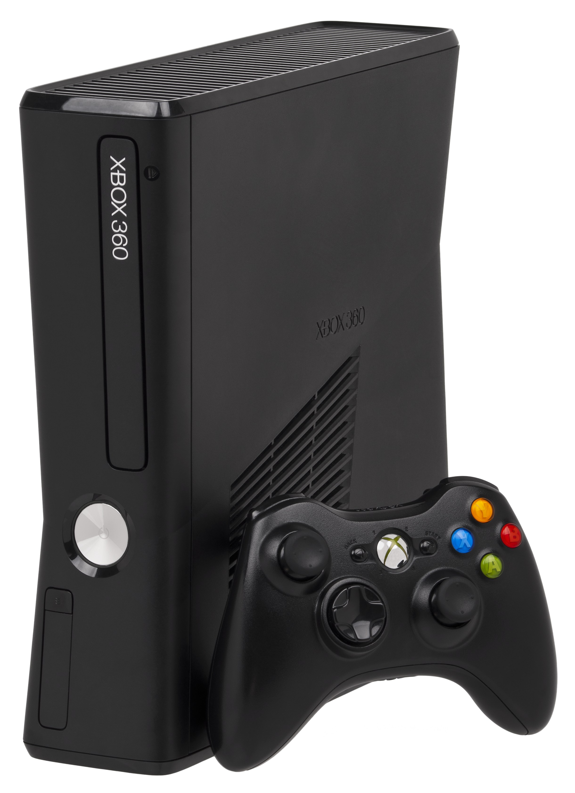

The Autopsy Report · Device #021
The Xbox 360
The console that defined online gaming — and the one whose red lights became a cultural event. We haven't opened one yet, so this report is built from the public record: the FCC's RF-module filing, independent teardowns, and the IBM and ATI silicon inside.
What is this thing?
The Xbox 360 is Microsoft's seventh-generation console, launched November 22, 2005 — the machine that made Xbox Live the template for online console gaming. Inside the launch hardware: an IBM "Xenon" CPU (three PowerPC cores at 3.2 GHz), an ATI "Xenos" GPU, and 512 MB of shared GDDR3 memory. Wikipedia Teardown analysis
This report covers the family from the launch Xenon boards through the final Corona revision — with one famous detour, the Red Ring of Death, covered below. The paperwork: the representative FCC record is C3K-RF02 — the filing for the 360's RF module / front wireless-controller board (application October 13, 2006), not a whole-console ID. Public hardware references distinguish multiple RF-board revisions across the Xenon–Corona span, so don't describe RF02 as universal to every unit. FCC record
Not yet on our bench
No unit of ours has been opened for this report. Everything below comes from public records: the FCC RF-module filing, independent teardowns, and published specifications. The public-record facts are as complete as we could make them; what awaits the bench is everything that requires our hands on our hardware — our own photos, our own measurements, and confirmation of exactly which board revision (Xenon, Zephyr, Falcon, Jasper, Trinity, Corona…) our future unit is. When a 360 lands on the bench, the thin spots below are exactly where we'll start.
A short history
- November 22, 2005Microsoft launches the Xbox 360 in North America — a year ahead of its rivals. Xbox Live makes online play feel native, not bolted on. Wikipedia
- October 13, 2006The RF module / front wireless-controller board filing C3K-RF02 is applied for — covering the 2.4 GHz radio that talks to the wireless controllers. FCC record
- 2006 – 2008The Red Ring of Death: launch-era units fail at alarming rates as thermal cycling cracks solder joints. Microsoft extends the warranty to three years and takes a $1.15 billion charge. It's the most expensive hardware lesson in console history. Wikipedia
- 2007 – 2010Board revisions march on — Zephyr, Falcon, Opus, Jasper — each shrinking the chips and taming the heat. The RROD fades into history. Wikipedia
- 2010 – 2013The Xbox 360 S (Valhalla board) and then the Xbox 360 E redesigns close out the generation. Over 84 million units sold. Wikipedia
The outside
The launch 360 is a white concave slab with a chrome-trimmed disc tray; the 360 S (Valhalla) goes glossy black and vented; the 360 E borrows the Xbox One's lines. One important note about the photo: it shows the later Xbox 360 S — not the launch Xenon hardware this report's early history describes. Same family, different generation of the design.

The board
The launch Xenon board carries the IBM Xenon CPU and ATI Xenos GPU as two large packages — the pair whose heat, in the original chassis, became the Red Ring of Death. Around them: Samsung GDDR3 memory, Hynix NAND flash, and the front-panel RF board that carries the 2.4 GHz wireless-controller radio documented in the C3K-RF02 filing. Teardown analysis Later revisions (Falcon, Jasper, Valhalla, Corona) shrank and merged aggressively — our future unit's exact revision is bench work.
Under the microscope: the chips
What's on the board, what each part does, and how sure we are. Confirmed means primary evidence only — an FCC exhibit, a manufacturer manual or datasheet, or an official announcement. Likely means corroborated secondary or public-teardown evidence. Markings below are representative of launch-era (Xenon) boards; later revisions differ substantially.
| Chip | What it does | How we know | Dig deeper |
|---|---|---|---|
| IBM Xenon 3.2 GHz, 3 PowerPC cores |
The CPU — three PowerPC cores, the 360's number-crunching heart. | Likely Identified in semiconductor teardown analysis; architecture per the technical literature. | Teardown analysis |
| ATI Xenos | The GPU — with 10 MB of embedded DRAM for the frame buffer, a first for consoles. | Likely Identified in semiconductor teardown analysis. | Teardown analysis |
| Samsung GDDR3, 512 MB | System memory — shared between the CPU and GPU. | Likely Marking documented in teardown analysis; vendor and density vary by revision. | Teardown analysis |
| Hynix NAND flash | Flash storage for firmware and system data. | Likely Marking documented in teardown analysis. | Teardown analysis |
| RF module / front wireless board FCC ID C3K-RF02, 2.4 GHz |
The wireless-controller radio — the 2.4 GHz link to the gamepads. | Confirmed The FCC record documents the module, its frequency range, and its application date. | FCC record |
The Xenon and Xenos are custom silicon with no public datasheets — the industry documentation gap, as usual. The RF board exists in multiple revisions across the Xenon–Corona span; we don't present RF02 as universal. Awaiting the bench: our unit's exact board revision, chip date codes, and memory vendor mix.
The government's file on this box
The representative FCC record is C3K-RF02 — and precision matters: this is the filing for the Xbox 360's RF module / front wireless-controller board, the 2.4 GHz radio that talks to the controllers (application dated October 13, 2006 — after the console's 2005 launch). It is not a whole-console equipment authorization, and we don't present it as one. The filing's setup photographs document the test configuration; no dedicated internal-photo exhibit of the module surfaced in our research. FCC record Browse it: C3K-RF02 on fccinsights.com.
Debug and service modes
Microsoft's documented service path for the 360 is the storage format procedure — the legitimate, published way to wipe a hard drive. From the system settings: go to System Settings → Storage, highlight the drive, press Y, and choose Format. Documented procedure This is a legitimate, manufacturer-documented procedure — the kind of thing we document, not the kind we defeat. (The 360's deeper service behaviors live in repair-community documentation, outside public manufacturer sources — and outside this report.) We haven't tested anything on our own hardware, because we don't have any yet.
What public records show
The public record gives us the 360's full biography: launch and revision dates, the Xenon/Xenos architecture, the memory configuration, the RF module's FCC record, and the Red Ring of Death saga with its $1.15 billion warranty extension. What it does not give us is anything that only exists inside a specific unit — board revision (Xenon through Corona is a long road), chip date codes, or which RF-board revision our future unit carries. That's the bench's job.
What we haven't done
- We haven't opened, photographed, or measured a 360 of our own.
- We haven't confirmed which board revision our future unit will be.
- We haven't verified the chip or RF-board markings against physical hardware.
- We haven't tested any service procedure.
- The photo above is a freely licensed stock image, credited in full — not our hardware — and it shows the 360 S redesign, not launch hardware.
By the numbers
- Board revisions: Xenon (launch) through Corona; S (Valhalla) and E redesigns
- FCC: C3K-RF02 — the RF module / front wireless-controller board (application 2006-10-13), not a whole-console ID
- CPU: IBM Xenon, 3.2 GHz triple-core PowerPC
- GPU: ATI Xenos, with 10 MB embedded DRAM
- Memory: 512 MB GDDR3 (shared)
- Storage: detachable hard drive
- Launched: November 22, 2005 (North America)
- Units sold: over 84 million
- RROD warranty extension: 3 years, $1.15 billion charge
Words to know
Every term this page uses, in plain English. No prior knowledge required.
- Red Ring of Death (RROD)
- The 360's infamous failure mode: three flashing red lights around the power button, caused by thermal-cycling damage to solder joints in launch-era units.
- Xenon / Xenos
- The code names for the 360's CPU (IBM) and GPU (ATI). Board revisions got their own code names too: Zephyr, Falcon, Jasper, Valhalla, Corona.
- RF board
- The front-panel board carrying the 2.4 GHz radio that talks to the wireless controllers — the subject of the C3K-RF02 filing.
- PowerPC
- IBM's RISC processor family — the 360's CPU, the Wii's CPU, and the PS3's main core all come from it.
- Thermal cycling
- Repeated heating and cooling — the physical stress that cracked the launch 360's solder joints.
- FCC ID
- The ID the FCC assigns to each approved wireless product or module. Punch it into fccid.io and the whole public filing comes up.
Sources & confidence
- FCC record C3K-RF02 (RF module / front wireless-controller board, application 2006-10-13, 2.4 GHz): the FCC record itself. High confidence.
- Chip identities (Xenon, Xenos, Samsung GDDR3, Hynix NAND): semiconductor teardown analysis with photographs. Medium-high confidence; revisions differ substantially.
- Launch/revision dates, sales figures, RROD history and the $1.15B warranty charge: published technical overviews. High confidence in the facts, medium in any single source.
- Storage format procedure: published documentation of the manufacturer procedure. Medium confidence; untested by us.
- No internal-photo exhibit for the RF module surfaced in our research — stated as a gap, not a fact.
- Anything not listed here is unknown until the bench says otherwise. We'll say so, out loud, when that's the case.
We publish no firmware, serials, keys, or private data. This report uses only public records plus a freely licensed stock photo.
Legal note. BareBoard is an educational project. We don't publish, host, or distribute firmware, keys, passwords, or credentials. Product names and trademarks belong to their respective owners and appear here only to identify the hardware. If you believe anything here infringes your rights, contact us and we'll address it promptly.